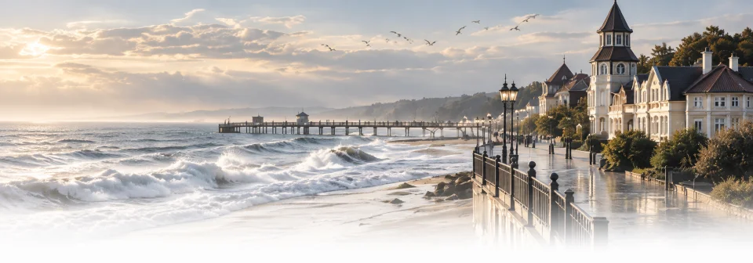
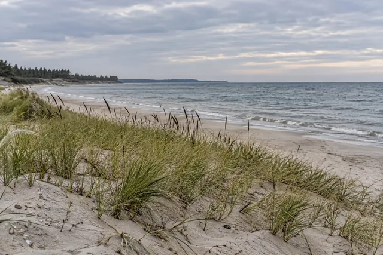

Зеленоградск · у променада
Море перед первым кофе
После прогулки можно вернуться к променаду. Сравните дорогу к своим остановкам, прежде чем выбирать улицу.
Добавьте остановки — сравним дорогу
 Маршруты БалтикиБалтика — это маршрут.
Маршруты БалтикиБалтика — это маршрут.
Свет на сайте
Сегодня · Калининград
В режиме «Авто» свет меняется вместе с солнцем.
Начало астрономической ночи для этих суток не рассчитано.
Спланировать вечерБраузер не сохранил выбор. На этой странице режим работает.
Балтийский
характер
рядом
Место, из которого начинается день
У моря, среди вилл или рядом с городскими прогулками. Выбирайте базу по своей поездке — и смотрите, сколько времени займёт дорога.
От двери до первой остановки
Хорошая база оставляет больше времени на берег. Сравните дорогу выбранных дней — или проверьте адрес, который уже нашли.
Свой поиск адресов и карта. Проверка не меняет вашу поездку.
Загружаем ваши дни. Районы доступны ниже.
Считаем путь от базы к первой точке и от последней обратно, с известными подходами. Перемещения внутри прогулки не входят в сравнение. Связанное прибытие задаёт начало своего дня. Электричку и запас до вылета смотрите в общем плане.

Зеленоградск · у променада
После прогулки можно вернуться к променаду. Сравните дорогу к своим остановкам, прежде чем выбирать улицу.
Добавьте остановки — сравним дорогу

Зеленоградск · западный берег
Пляж у Зеленоградска-2 — ориентир западной части города. Путь от конкретной двери и станции проверьте на карте.
Добавьте остановки — сравним дорогу

Куршская коса · Лесной
Пляж служит ориентиром. Въезд в национальный парк и условия жилья проверяются отдельно; лесная тишина не гарантирует короткую дорогу.
Добавьте остановки — сравним дорогу

Светлогорск · у озера
Озеро даёт другой старт прогулки. Сравните выход к морю со своими точками: рельеф и спуски входят в выбор пути.
Добавьте остановки — сравним дорогу

Калининград · у реки
Рыбная деревня — ориентир для прогулок у острова Канта. Поездка к морю потребует отдельного времени.
Добавьте остановки — сравним дорогу
Калининград · Амалиенау
Вилла Шмидт — ориентир района. Проверьте дорогу до музеев и следующих дней поездки, прежде чем остановиться здесь.
Добавьте остановки — сравним дорогу
Здесь — районы и ориентиры для сравнения. Это не адреса отелей и не предложения номеров. Для жилья, которое выбрали, отметьте точный вход на карте; тишину, парковку, заселение и проживание с питомцем уточните у хозяина.
Обновлено 4 октября 2026 года. Условия посещения остановок проверьте перед поездкой.